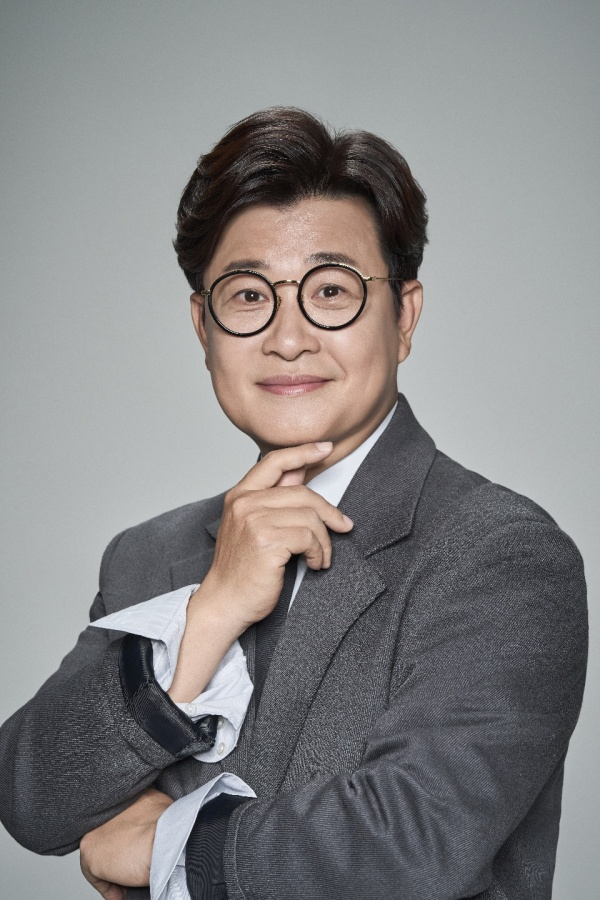
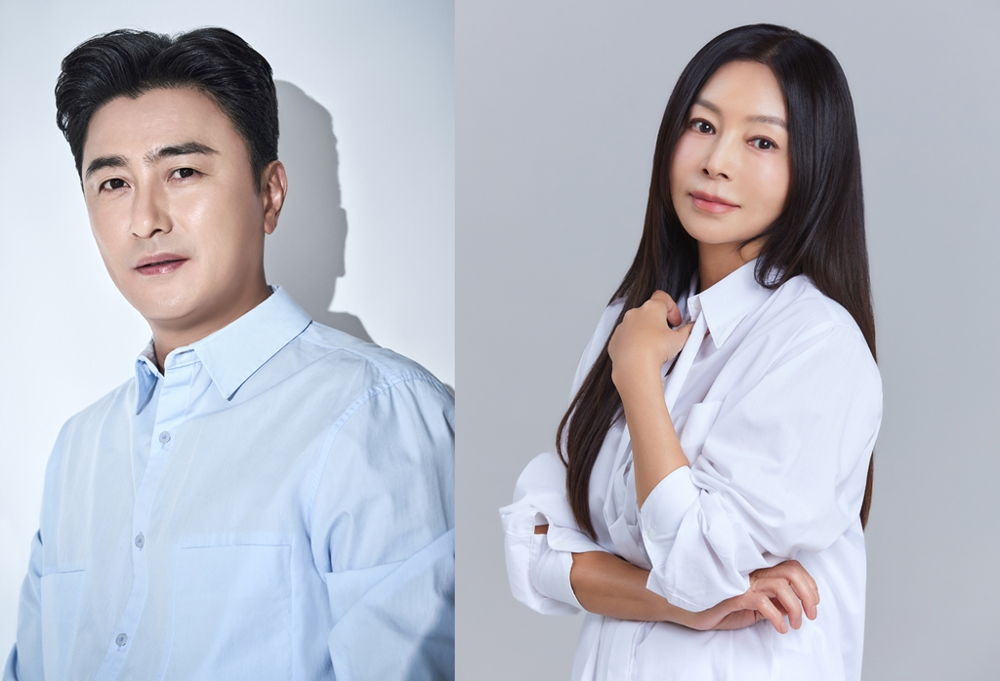
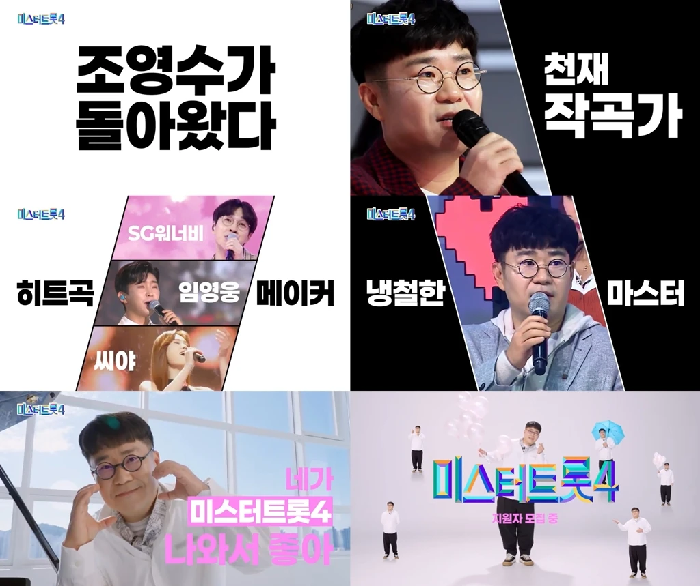
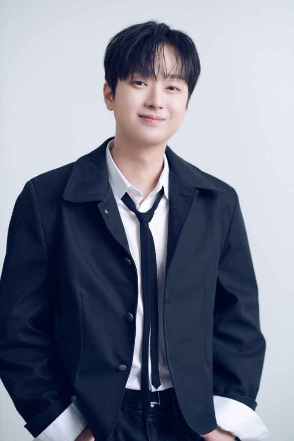

미스터트롯4 출연진 정보, MC와 마스터 명단
김성주는 진행, 선배 가수들은 마스터로 만나요.
 미스터트롯4 공식 티저 포스터 · 출처: TV조선
미스터트롯4 공식 티저 포스터 · 출처: TV조선푸른빛과 붉은빛 사이로 검을 세운 포스터부터 강렬하네요.
미스터트롯4 출연진 정보가 궁금하셨나요? MC 김성주와 새롭게 합류한 안정환·황신혜, 역대 시즌 출신 마스터까지 공개된 명단을 정리해봤습니다.
김성주, 이번에도 MC로 함께해요

MC 김성주의 과거 프로필 자료사진 · 출처: 장군엔터테인먼트동그란 안경에 부드러운 미소까지, 단정한 재킷 차림이 잘 어울리네요.
김성주는 미스터트롯4의 진행을 맡습니다. 미스트롯 첫 시즌부터 이어온 인연을 새 시즌에도 이어가는데요.
경연을 이끌어갈 익숙한 목소리를 다시 만난다니 반갑습니다.
안정환·황신혜는 새 마스터

새 마스터 안정환·황신혜의 프로필 자료사진 · 출처: 각 소속사밝은 셔츠 차림으로 나란히 담긴 두 사람, 심사석에서 만날 조합이 새롭네요.
축구선수 출신 방송인 안정환과 배우 황신혜가 마스터로 합류합니다. 두 사람 모두 도전자들의 무대를 평가하는 심사위원으로 참여해요.
예능에서 솔직한 입담을 보여준 안정환이 합류한다니 새로운 모습이 기대되네요. 배우 황신혜가 심사석에서는 어떤 이야기를 들려줄지도 궁금합니다.
장윤정의 합류와 조영수의 복귀

조영수의 마스터 복귀 홍보 자료, 이미지 속 모집 안내는 지난 일정 · 출처: TV조선손으로 하트를 만든 모습까지 담겨 있어, 조영수의 또 다른 표정도 보이네요.
장윤정은 이번에도 마스터로 함께하고, 작곡가 조영수도 심사위원으로 돌아옵니다. 가수와 작곡가가 나란히 심사석에 이름을 올렸어요.
조영수는 임영웅의 ‘이제 나만 믿어요’를 만든 작곡가이기도 합니다. 익숙한 노래를 탄생시킨 그가 어떤 새 목소리를 눈여겨볼지 기대됩니다.
역대 시즌 선배 마스터 6명

선배 마스터로 합류하는 이찬원의 프로필 자료사진 · 출처: 그레이스이엔엠검은 넥타이를 살짝 느슨하게 맨 모습에 부드러운 미소가 잘 어울려요.
시즌1 출신 이찬원·김희재, 시즌2 진 안성훈·선 박지현, 시즌3 진 김용빈·선 손빈아도 마스터로 합류합니다.
이찬원은 시즌1 미 출신이고, 김희재는 TOP7에 올랐던 가수예요. 직접 경연을 치렀던 선배들이 본선 심사에 참여한다니, 후배들에게 건넬 조언을 듣는 재미도 있겠네요.
경연 참가자는 별도 명단을 기다려요
 마스터 장윤정의 인물 자료사진 · 출처: 밀알복지재단
마스터 장윤정의 인물 자료사진 · 출처: 밀알복지재단두 손을 모으고 웃는 장윤정의 사진도 함께 보니 반갑네요.
경연 참가자 전체 명단은 아직 공식 공개되지 않았습니다. 제작진은 현역 가수들의 재도전과 비현역 실력자들의 대결을 예고했어요.
새로 경쟁할 도전자들은 어떤 얼굴일지 궁금해지는데요. 참가자들이 확정되면 소식 또 들고 오겠습니다!